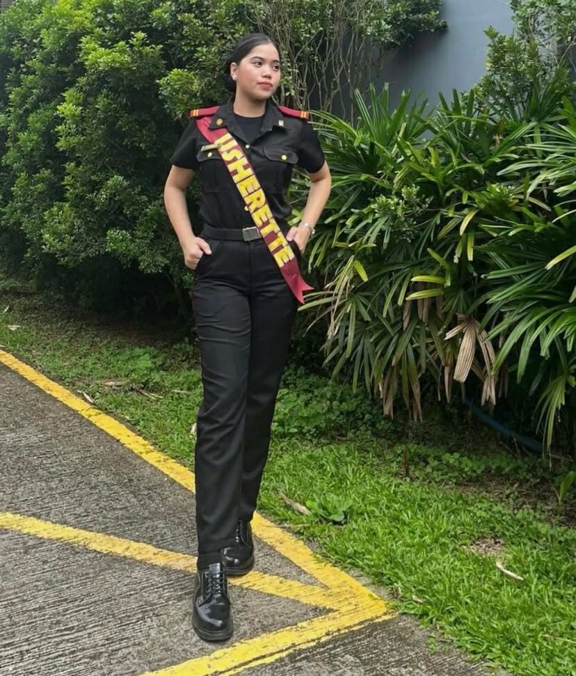

A nature enthusiast who enjoys peaceful adventures, outdoor places, and meaningful experiences while pursuing my studies in Criminology.
Know More
Name: Ma. Sophia Antoinette C. Perez
Age: 21 years old
Birthday: March 23, 2005
Location: Mataasnakahoy, Batangas
I am currently a 3rd Year Criminology student who is dedicated to gaining knowledge and developing the skills needed in the field of criminology and law enforcement.
I am interested in criminal investigation, forensic science, crime prevention, and public safety. These areas inspire me to become more disciplined, responsible, and prepared to serve the community in the future.
I enjoy spending time in nature, especially visiting beaches, rivers, and peaceful outdoor places. I love hiking, exploring new destinations, and watching sunsets because these activities help me relax and feel at peace. I also enjoy taking photos of nature and creating memorable adventures with friends.
Hello! My name is Ma. Sophia Antoinette C. Perez, a 21-year-old 3rd Year Criminology student from Mataasnakahoy, Batangas. I am a nature enthusiast who enjoys peaceful adventures and exploring the beauty of the outdoors. I strive to balance my academic responsibilities with activities that inspire me, help me stay motivated, and bring positivity into my daily life.
I enjoy spending time outdoors because nature gives me peace, relaxation, and inspiration. Visiting beaches, rivers, and mountains helps me appreciate the beauty of the environment and gives me time to reflect and recharge.
Exploring different natural places allows me to experience new adventures and challenges. I enjoy discovering scenic locations, hiking trails, and quiet places that help me develop confidence, patience, and discipline.
Being in nature helps me reduce stress from school responsibilities and maintain a balanced lifestyle. The peaceful atmosphere and fresh air improve my focus, positivity, and motivation in everyday life.
As a student, I believe having hobbies and interests outside academics is important. Being a nature enthusiast allows me to stay active, inspired, and connected with the world around me while enjoying meaningful experiences and personal growth.
“Nature gives me peace, motivation, and strength to continue learning and growing.”
Name: Ma. Sophia Antoinette C. Perez
Email: Sophiaantoinetteperez@gmail.com
Facebook: Ma. Sophia Antoinette Perez
Location: Mataasnakahoy, Batangas